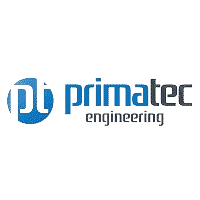

Projets Academique
Développement d'un plateforme de rédaction web qui regroupent les clients et les rédacteurs.
logiciels: php ,laravel,html,css,bootstrap-
Stage PFE janvier 2023
Stage d'été juillet 2022
Stages
All Soft Multimedia
Réalisation d'un système d'information décisionnel pour une gestion commerciale
logiciels: Power BI ,SSIS ,MachineLearning ,SQL
PRIMATEC Engineering
Contrôler un dispositif d'alimentation à distance avec un proxy Python Ethernet-to-Serial
logiciels: Python,Flask,HTML,CSS